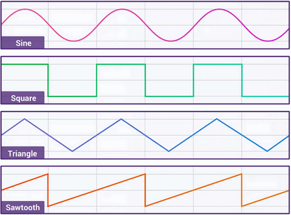

demo2：
var audioCtx = new AudioContext();
var oscillator = audioCtx.createOscillator();
var gainNode = audioCtx.createGain();
oscillator.connect(gainNode);
gainNode.connect(audioCtx.destination);
oscillator.type = 'sine';
oscillator.frequency.value = ARRFREQUENCY[TIGERS[index]];
gainNode.gain.setValueAtTime(0, audioCtx.currentTime);
gainNode.gain.linearRampToValueAtTime(1, audioCtx.currentTime + 0.01);
oscillator.start(audioCtx.currentTime);
gainNode.gain.exponentialRampToValueAtTime(0.001, audioCtx.currentTime + 1);
oscillator.stop(audioCtx.currentTime + 1);

波形
两只老虎
demo2：